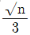
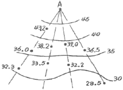
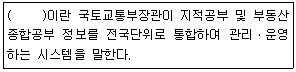
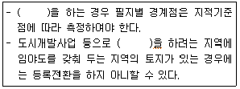

지적산업기사 (2019-08-04 기출문제)
1과목: 지적측량
1. 좌표면적 계산법에 따른 면적측정에서 산출면적은 얼마의 단위까지 계산하여야 하는가?
- 1m2 까지 계산
- 1/10m2 까지 계산
- 1/100m2 까지 계산
- 1/1000m2 까지 계산
(정답률: 71%)

2. 지적도를 제도하는 경계의 폭( ㉠ ) 및 행정구역선의 폭( ㉡ )기준으로 옳은 것은? (단, 동ㆍ리의 행정구역선의 경우는 제외한다.)
- ㉠ : 0.1mm, ㉡ : 0.4mm
- ㉠ : 0.15mm, ㉡ : 0.5mm
- ㉠ : 0.2mm, ㉡ : 0.5mm
- ㉠ : 0.25mm, ㉡ : 0.4mm
(정답률: 75%)
3. 지적측량성과와 검사 성과의 연결교차 허용범위 기준으로 옳지 않은 것은? (단, M은 축척분모이며 경계점좌표등록부 시행지역의 경우는 고려하지 않는다.)
- 지적도근점:0.20m 이내
- 지적삼각점:0.20m 이내
- 경계점:10분의 3m 이내
- 지적삼각보조점:0.25m 이내
(정답률: 69%)
4. 무한히 확산되는 평면전자기파가 1/299792458초 동안 진공 증을 진행하는 길이로 표시되는 단위는?
- 1 미터(m)
- 1 칸델라(cd)
- 1 피피엠(ppm)
- 1 스테라디안(sr)
(정답률: 66%)
5. 지적삼각보조점성과표의 기록ㆍ관리 등에 관한 내용으로 옳은 것은?
- 표지의 재질을 기록ㆍ관리할 것
- 자오선수차(子午線收差)를 기록관리할 것
- 지적삼각보조점성과는 시ㆍ도지사가 관리할 것
- 시준점(視準點)의 명칭, 방위각 및 거리를 기록ㆍ관리할 것
(정답률: 56%)
6. 평판측량방법에 따른 세부측량을 도선법으로 하는 경우에 대한 설명으로 옳지 않은 것은?
- 도선의 변은 20개 이하로 한다.
- 지적측량기준점 간을 서로 연결한다.
- 도선의 측선장은 도상길이 12센티미터 이하로 한다.
- 도선의 폐색오차가 도상길이

밀리미터 이하인 경우, 계산식에 따라 이를 각 점에 배부하여 그 점의 위치로 한다.
(정답률: 75%)
7. 축척 500분의 1에서 지적도근점측량 시 도선의 총길이가 3318.55m일 때 2등도선인 경우 연결오차의 허용범위는?
- 0.29m 이하
- 0.34m 이하
- 0.43m 이하
- 0.92m 이하
(정답률: 60%)
8. 지적도근점측량의 1등도선으로 할 수 없는 것은?
- 삼각점의 상호간 연결
- 지적삼각점의 상호간 연결
- 지적삼각보조점의 상호간 연결
- 지적도근점의 상호간 연결
(정답률: 62%)
9. 평판측량방법에 따른 세부측량을 시행할 때 경계위치는 기지점을 기준으로 하여 지상경계선과 도상경계선의 부합여부를 확인하여야 하는데, 이를 확인하는 방법이 아닌 것은?
- 현형법
- 거리비례확인법
- 도상원호교회법
- 지상원호교회법
(정답률: 62%)
10. 기초측량 및 세부측량을 위하여 실시하는 지적측량의 방법이 아닌 것은?
- 사진측량
- 수준측량
- 위성측량
- 경위의측량
(정답률: 64%)
11. 평판측량방법에 따른 세부측량을 도선법으로 시행한 결과 변의 수(N)가 20, 도산오차(e)가 1.0mm 발생하였다면, 16번째 변(n)에 배부하여야 할 도상길이(Mn)는?
- 0.5mm
- 0.6mm
- 0.7mm
- 0.8mm
(정답률: 54%)
12. 전자면적측정기에 따른 면적측정 기준으로 옳지 않은 것은?
- 도상에서 2회 측정한다.
- 측정면적은 100분의 1제곱미터까지 계산한다.
- 측정면적은 10분의 1제곱미터 단위로 정한다.
- 교차가 허용면적 이하일 때에는 그 평균치를 측정면적으로 한다.
(정답률: 78%)
13. 어떤 두 점 간의 거리를 같은 측정방법으로 n회 측정하였다. 그 참값을 L, 최확값을 L0라 할 때 참오차(E)를 구하는 방법으로 옳은 것은?
- E=L÷L0
- E=L×L0
- E=L-L0
- E=L+L0
(정답률: 84%)
14. 지적삼각보조점측량을 2방향의 교회에 의하여 결정하려는 경우의 처리방법은? (단, 각 내각의 관측치의 합계와 180도와의 차가 ±40초 이내일 때이다.)
- 각 내각에 고르게 배부한다.
- 각 내각의 크기에 비례하여 배부한다.
- 각 내각의 크기에 반비례하여 배부한다.
- 허용오차이므로 관측내각에 배분할 필요가 없다.
(정답률: 58%)
15. 다음 중 지적도근점측량을 필요로 하지 않는 경우는?
- 축척변경을 위한 측량을 하는 경우
- 대단위 합병을 위한 측량을 하는 경우
- 도시개발사업 등으로 인하여 지적확정측량을 하는 경우
- 측량지역의 면적이 해당 지적도 1장에 해당하는 면적 이상인 경우
(정답률: 73%)
16. 직접 거리측정에 따른 오차 중 그 성질이 부(-)인 것은?
- 줄자의 처짐으로 인한 오차
- 측정 시 장력의 과다로 인한 오차
- 측선이 수평이 안됨으로 나타난 오차
- 측선이 일직선이 안 됨으로 나타난 오차
(정답률: 61%)
17. 망원경조준의(망원경 엘리데이드)로 측정한 경사거리가 150.23m, 연직각이 +3°50‘25“일 때 수평거리는?
- 138.56m
- 140.25m
- 145.69m
- 149.89m
(정답률: 70%)
18. 지적측량 시 광파거리 측량기를 이용하여 3km 거리를 5회 관측하였을 때 허용되는 평균교차는?
- 3cm
- 5cm
- 6cm
- 10cm
(정답률: 47%)
19. 평판측량에 의한 세부측량 시, 도상의 위치오차를 0.1mm까지 허용할 때 구심오차의 허용범위는? (단, 축척은 1200분의 1이다.)
- 1cm 이하
- 3cm 이하
- 6cm 이하
- 12cm 이하
(정답률: 38%)
20. 지번 및 지목의 제도방법에 대한 설명으로 옳지 않은 것은?
- 지번 및 지목은 2mm 이상 3mm 이하의 크기로 제도한다.
- 지번의 글자 간격은 글자크기의 4분의 1정도 띄워서 제도한다.
- 지번 및 지목은 경계에 닿지 않도록 필지의 중앙에 제도한다.
- 지번과 지목의 글자 간격은 글자크기의 3분의 1정도 띄어서 제도한다.
(정답률: 71%)
2과목: 응용측량
21. GNSS 측량에서 GDOP에 관한 설명으로 옳은 것은?
- 위성의 수치적인 평면의 함수 값이다.
- 수신기의 기하학적인 높이의 함수 값이다.
- 위성의 신호 강도와 관련된 오차로서 그 값이 크면 정밀도가 낮다.
- 위성의 기하학적인 배열과 관련된 함수 값이다.
(정답률: 53%)
22. GPS에서 채택하고 있는 타원체는?
- Hayford
- WGS84
- Bessel841
- 지오이드
(정답률: 79%)
23. 측량의 구분에서 노선측량과 가장 거리가 먼 것은?
- 철도의 노선설계를 위한 측량
- 지형, 지물 등을 조사하는 측량
- 상하수도의 도수관 부설을 위한 측량
- 도로의 계획조사를 위한 측량
(정답률: 69%)
24. 터널 내에서 차량 등에 의하여 파손되지 않도록 콘크리트 등을 이용하여 일반적으로 천장에 설치하는 중심말뚝을 무엇이라 하는가?
- 도갱
- 자이로(gyro)
- 레벨(level)
- 다보(dowel)
(정답률: 62%)
25. 노선측량에서 원곡선 설치에 대한 설명으로 틀린 것은?
- 철도, 도로 등에는 차량의 운전에 편리하도록 단곡선 보다는 복심곡선을 많이 설치하는 것이 좋다.
- 교통안전의 관점에서 반향곡선은 가능하면 사용하지 않는 것이 좋고 불가피한 경우에는 두 곡선 사이에 충분한 길이의 완화곡선을 설치한다.
- 두 원의 중심이 같은 쪽에 있고 반지름이 각기 다른 두 개의 원곡선을 설치하는 경우에는 완화곡선을 넣어 곡선이 점차로 변하도록 해야 한다.
- 고속주행 차량의 통과를 위하여 직선부와 원곡선 사이나 큰 원과 작은 원 사이에는 곡률 반지름이 점차 변화하는 곡선부를 설치하는 것이 좋다.
(정답률: 68%)
26. 노선측량에서 단곡선의 교각이 75°, 곡선반지름이 100m, 노선 시작점에서 교점까지의 추가거리가 250.75m일 때 시단현의 편각은? (단, 중심말뚝의 거리는 20m이다.)
- 4°00‘39“
- 1°43‘08“
- 0°56‘12“
- 4°47‘34“
(정답률: 50%)
27. 2km를 왕복 직접수준측량하여 ±10mm 오차를 허용한다면 동일한 정확도로 측량하여 4km를 왕복 직접수준측량할 때 허용오차는?
- ±8mm
- ±14mm
- ±20mm
- ±24mm
(정답률: 61%)
28. 축척 1:500 지형도를 이용하여 1:1000 지형도를 만들고자 할 때 1:1000 지형도 1장을 완성하려면 1:500 지형도 몇 매가 필요한가?
- 16매
- 8매
- 4매
- 2매
(정답률: 75%)
29. 지형도의 등고선 간격을 결정하는데 고려되지 않아도 되는 사항은?
- 지형
- 축척
- 측량목적
- 측정거리
(정답률: 36%)
30. 터널측량에 관한 설명으로 옳지 않은 것은?
- 터널 내에서의 곡선설치는 지상의 측량방법과 동일하게 한다.
- 터널 내의 측량기기에는 조명이 필요하다.
- 터널 내의 측점은 천장에 설치하는 것이 좋다.
- 터널 측량은 터널 내 측량, 터널 외 측량, 터널 내외 연결측량으로 구분할 수 있다.
(정답률: 74%)
31. 클로소이드 곡선에서 매개변수 A=400m, 곡선반지름 R=150m일 때 곡선의 길이 L은?
- 560.2m
- 898.4m
- 1066.7m
- 2066.7m
(정답률: 58%)
32. 항공사진의 촬영고도 6000m, 초점거리 150mm, 사진크기 18cm×18cm에 포함되는 실면적은?
- 48.7km2
- 50.6km2
- 51.8km2
- 52.4km2
(정답률: 49%)
33. 항공사진에서 기복변위량을 구하는 데 필요한 요소가 아닌 것은?
- 지형의 비고
- 촬영고도
- 사진의 크기
- 연직점으로부터의 거리
(정답률: 58%)
34. 두 개 이상의 표고 기지점에서 미지점의 표고를 측정하는 경우에 경중률과 관측거리의 관계를 설명한 것으로 옳은 것은?
- 관측값의 경중률은 관측거리의 제곱근에 비례한다.
- 관측값의 경중률은 관측거리의 제곱근에 반비례한다.
- 관측값의 경중률은 관측거리에 비례한다.
- 관측값의 경중률은 관측거리에 반비례한다.
(정답률: 42%)
35. 그림과 같이 지성선 반향이나 주요한 방향의 여러 개 관측선에 대하여 A로 부터의 거리와 높이를 관측하여 등고선을 삽입하는 방법은?

- 직접법
- 횡단점법
- 종단전법(기준점법)
- 좌표점법(사각형 분할법)
(정답률: 72%)
36. 항공사진을 판독할 때 미리 알아두어야 할 조건이 아닌 것은?
- 카메라의 초점거리
- 촬영고도
- 촬영 연월일 및 촬영시각
- 도식기호
(정답률: 57%)
37. 사진면에 직교하는 광선과 연직선이 이루는 각을 2등분하는 광선이 사진면과 만나는 점은?
- 등각점
- 주점
- 연직점
- 수평점
(정답률: 59%)
38. GNSS 오차 중 송신된 신호를 동기화하는 데 발생하는 시계오차와 전기적 잡음에 의한 오차는?
- 수신기 오차
- 이성의 시계 오차
- 다중 전파경로에 의한 오차
- 대기조건에 의한 오차
(정답률: 64%)
39. 지형도의 등고선에 대한 설명으로 옳지 않은 것은?
- 등고선의 표고수치는 평균해수면을 기준으로 한다.
- 한 장의 지형도에서 주곡선의 높이간격은 일정하다.
- 등고선은 수준점 높이와 같은 정도의 정밀도가 있어야 한다.
- 계곡선은 도면의 안팎에서 반드시 폐합한다.
(정답률: 40%)
40. 수준면(level surface)에 대한 설명으로 옳은 것은?
- 레벨의 시준면으로 고저각을 잴 때 기준이 되는 평면
- 지구 상 어떤 점에서 지구의 중심 방향에 수직한 평면
- 지구 상 모든 점에서 중력의 방향에 직각인 곡면
- 지구 상 어떤 점에서 수평면에 접하는 평면
(정답률: 39%)
3과목: 토지정보체계론
41. SQL의 특징에 대한 설명으로 옳지 않은 것은?
- 상호 대화식 언어다.
- 집합단위로 연산하는 언어다.
- ISO 8211에 근거한 정보처리체계와 코딩규칙을 갖는다.
- 관계형 DBMS에서 자료를 만들고 조회할 수 있는 도구다.
(정답률: 54%)
42. 지적도면 전산화 사업으로 생성된 지적도면 파일을 이용하여 지적업무를 수행할 경우의 장점으로 옳지 않은 것은?
- 지적측량성과의 효율적인 전산관리가 가능하다.
- 지적도면에서 신축에 따른 지적도의 변형이나 훼손 등의 오류를 제거할 수 있다.
- 공간정보 분야의 다양한 주제도와 융합하여 새로운 콘텐츠를 생성할 수 있다.
- 원시 지적도면의 정확도가 한층 높아져 지적측량성과의 정확도 향상을 기할 수 있다.
(정답률: 54%)
43. 공간질의에 이용되는 연산방법 중 일반적인 분류에 포함되지 않는 것은?
- 공간연산
- 논리연산
- 산출연산
- 통계연산
(정답률: 39%)
44. 메타데이터(metadata)에 대한 설명으로 옳은 것은?
- 수학적으로 데이터의 모형을 정의하는 데 필요한 구성요소다.
- 여러 변수 사이에 함수 관계를 설정하기 위하여 사용되는 매개 데이터를 말한다.
- 데이터의 내용, 논리적 관계, 기초자료의 정확도, 경계 등 자료의 특성을 설명하는 정보의 이력서이다.
- 토지정보시스템에 사용되는 GPS, 사진측량 등으로 얻은 위치자료를 데이터베이스화한 자료를 말한다.
(정답률: 66%)
45. 속성데이터에 해당하지 않는 것은?
- 지적도
- 토지대장
- 공유지연명부
- 대지권등록부
(정답률: 69%)
46. 속성자료의 관리에 대한 설명으로 옳지 않은 것은?
- 속성테이블은 대표적으로 파일시스템과 데이터베이스 관리시스템으로 관리한다.
- 토지대장, 임야대장, 경계점좌표등록부 등과 같이 문자와 수치로 된 자료는 키보드를 사용하여 쉽고 편리하게 입력할 수 있다.
- 데이터베이스 관리시스템으로 관리하는 것은 시스템이 비교적 간단하고 데이터베이스가 소규모일 때 사용하는 방법이다.
- 속성자료를 입력할 때 입력자의 착오로 인한 오류가 발생할 수 있으므로 입력한 자료를 출력하여 재검토한 후 오류가 발견되면 수정하여야 한다.
(정답률: 73%)
47. 지적도 재작성 사업을 시행하여 지적도 독취자료를 이용하는 도면전산화의 추진년도는?
- 1975년
- 1978년
- 1984년
- 1990년
(정답률: 50%)
48. 경위도 좌표계에 대한 설명으로 옳지 않은 것은?
- 지구타원체의 회전에 기반을 둔 3차원 구형좌표계이다.
- 횡축 메르카토르 투영을 이용한 2차원 평면좌표계이다.
- 위도는 한 점에서 기준타원체의 수직선과 적도평면이 이루는 각으로 정의된다.
- 경도는 적도평면에 수직인 평면과 본초자오선 면이 이루는 각으로 정의된다.
(정답률: 54%)
49. 지적전산자료의 이용 또는 활용 시 사용료를 면제받을 수 있는 자는?
- 학생
- 공기업
- 민간기업
- 지방자치단체
(정답률: 75%)
50. 래스터 데이터의 각 행마다 왼쪽에서 오른쪽으로 진행하면서 동일한 수치를 갖는 값들을 묶어 압축하는 방식은?
- 블록코드
- 사지수형
- 체인코드
- 런렝스코드
(정답률: 60%)
51. 디지타이징과 비교하여 스캐닝 작업이 갖는 특징에 대한 설명으로 옳은 것은?
- 스캐너는 장치운영 방법이 복잡하여 위상에 관한 정보가 제공된다.
- 스캐너로 읽은 자료는 디지털카메라로 촬영하여 얻은 자료와 유사하다.
- 스캐너로 입력된 자료는 벡터자료로서 벡터라이징 작업이 필요하지 않다.
- 디지타이징은 스캐닝 방법에 비해 자동으로 작업할 수 있으므로 작업속도가 빠르다.
(정답률: 68%)
52. 다음 ()안에 들어갈 용어로 옳은 것은?

- 국토정보시스템
- 지적행정시스템
- 한국토지정보시스템
- 부동산종합공부시스템
(정답률: 37%)
53. 토지정보시스템(Land Information System)운용에서 역점을 두어야 할 측면은?
- 민주성과 기술설
- 사회성과 기술성
- 자율성과 경제성
- 정확성과 신속성
(정답률: 72%)
54. 제6차 국가공간정보정책 기본계획의 계획 기간으로 옳은 것은?
- 2010년~2015년
- 2013년~2017년
- 2014년~2019년
- 2018년~2022년
(정답률: 65%)
55. 래스터 데이터의 설명으로 옳지 않은 것은?
- 데이터 구조가 간단하다.
- 격자로 표현하기 때문에 데이터 표출에 한계가 있다.
- 데이터가 위상구조로 되어 있어 공간적인 상관성 분석에 유리하다.
- 공간 해상도를 높일 수 있으나 데이터의 양이 방대해지는 단점이 있다.
(정답률: 64%)
56. 시ㆍ군ㆍ구 단위의 지적전산자료를 활용하려는 자가 지적전산자료를 신청하여야 하는 곳은? (단, 자치구가 아닌 구를 포함한다.)
- 도지사
- 지적소관청
- 국토교통부장관
- 행정안전부장관
(정답률: 78%)
57. 데이터베이스의 장점으로 옳지 않은 것은?
- 자료의 독립성 유지
- 여러 사용자의 동시 사용 가능
- 초기 구축비용과 유지비가 저렴
- 표준화되고 구조적인 자료 저장 가능
(정답률: 78%)
58. 다음 중 필지중심토지정보시스템(PBLIS)의 구성 체계에 해당되지 않는 것은?
- 지적측량시스템
- 지적공부관리시스템
- 지적거래관리시스템
- 지적측량성과작성시스템
(정답률: 70%)
59. 1970년대에 우리나라 정부가 지정한 지적전산화 업무의 최초 시범지역은?
- 서울
- 대전
- 대구
- 부산
(정답률: 70%)
60. 래스터데이터에 해당하는 파일은?
- TIF 파일
- SHI 파일
- DGN 파일
- DWG 파일
(정답률: 66%)
4과목: 지적학
61. 공훈의 차등에 따라 공신들에게 일정한 면적의 토지를 나누어 준 것으로, 고려시대 토지제도 정비의 효시가 된 것은?
- 정전
- 공신전
- 관료전
- 역분전
(정답률: 61%)
62. 우리나라의 현행 지적제도에서 채택하고 있는 지목 설정 기준은?
- 용도지목
- 자연지목
- 지형지목
- 토성지목
(정답률: 80%)
63. 오늘날 지적측량의 방법과 절차에 대하여 엄격한 법률적인 규제를 가하는 이유로 가장 옳은 것은?
- 측량기술의 발전
- 기술적 변화 대처
- 법률적인 효력유지
- 토지등록정보 복원유지
(정답률: 78%)
64. 초기에 부여된 지목명칭을 변경한 것으로 잘못된 것은?
- 공원지→공원
- 분묘지→묘지
- 사사지→사적지
- 운동장→체육용지
(정답률: 69%)
65. 다음 중 임야조사사업 당시 도지사가 사정한 경계 및 소유자에 대해 불복이 있을 경우 사정 내용을 번복하기 위해 필요하였던 처분은?
- 임야심사위원회의 재결
- 관할 고등법원의 확정판결
- 고등토지조사위원회의 재결
- 임시토지조사국장의 재사정
(정답률: 70%)
66. 토렌스 시스템(Torrens System)이 창안된 국가는?
- 영국
- 프랑스
- 네덜란드
- 오스트레일리아
(정답률: 70%)
67. 다음 토지경계를 설명한 것으로 옳지 않은 것은?
- 토지경계에는 불가분의원칙이 적용된다.
- 공부에 등록된 경계는 말소가 불가능하다.
- 토지경계는 국가기관인 소관청이 결정한다.
- 지적공부에 등록된 필지의 구획선을 말한다.
(정답률: 72%)
68. 1필지로 정할 수 있는 기준에 해당하지 않는 것은?
- 지번부여지역의 토지로서 용도가 동일한 토지
- 지번부여지역의 토지로서 지가가 동일한 토지
- 지번부여지역의 토지로서 지반이 연속된 토지
- 지번부여지역의 토지로서 소유자가 동일한 토지
(정답률: 74%)
69. 지적의 실체를 구체화시키기 위한 법률 행위를 담당하는 토지등록의 주체는?
- 지적소관청
- 지적측량업자
- 행정안전부장관
- 한국국토정보공사장
(정답률: 73%)
70. 토지조사사업 당시 도로, 하천, 구거, 제방, 성첩, 철도선로, 수도선로를 조사 대상에서 제외한 주된 이유는?
- 측량작업의 난이
- 소유자 확인 불명
- 강계선 구분 불가능
- 경제적 가치의 회소
(정답률: 65%)
71. 다음 중 지적제도의 발전단계별 분류상 가장 먼저 발생한 것으로 원시적인 지적제도라고 할 수 있는 것은?
- 법지적
- 세지적
- 정보지적
- 다목적지적
(정답률: 79%)
72. 지적의 3요소와 가장 거리가 먼 것은?
- 공부
- 등기
- 등록
- 토지
(정답률: 71%)
73. 경계점 표지의 특성이 아닌 것은?
- 명확성
- 안전성
- 영구성
- 유동성
(정답률: 67%)
74. 1916년부터 1924년까지 실시한 임야조사사업에서 사정한 임야의 구획선은?
- 강계선(疆界線)
- 경계선(境界線)
- 지계선(地界線)
- 지역선(地域線)
(정답률: 43%)
75. 미등기토지를 등기부에 개설하는 보존등기를 할 경우에 소유권에 관하여 특별한 증빙서로 하고 있는 것은?
- 공증증서
- 토지대장
- 토지조사부
- 등기공무원의 조사서
(정답률: 44%)
76. 토지의 물권 설정을 위해서는 물권 객체의 설정이 필요하다. 토지의 물권 객체 설정을 위한 지적의 가장 중요한 역할은?
- 면적측정
- 지번설정
- 필지확정
- 소유권 조사
(정답률: 58%)
77. 지적의 원리 중 지적활동의 정확성을 설명한 것으로 옳지 않은 것은?
- 서비스의 정확성-기술의 정확도
- 토지현황조사의 정확성-일필지 조사
- 기록과 도면의 정확성-측량의 정확도
- 관리ㆍ운영의 정확성-지적조직의 업무분화 정확도
(정답률: 60%)
78. 적극적 지적제도의 특징이 아닌 것은?
- 토지의 등록은 의무화되어 있지 않다.
- 토지등록의 효력은 정부에 의해 보장된다.
- 토지등록상 문제로 인한 피해는 법적으로 보장된다.
- 등록되지 않은 토지에는 어떤 권리도 인정될 수 없다.
(정답률: 79%)
79. 토지의 소유권 객체를 확정하기 위하여 채택한 근대적인 기술은?
- 지적측량
- 지질분석
- 지형조사
- 토지가격평가
(정답률: 77%)
80. 조선시대 향전의 개혁을 주장한 학자가 아닌 사람은?
- 이기
- 김응원
- 서유구
- 정약용
(정답률: 68%)
5과목: 지적관계
81. 지적측량수행자가 손해배상책임을 보장하기 위하여 보증보험에 가입하여야 하는 금액 기준으로 옳은 것은?
- 지적측량업자:5천만 원 이상, 한국국토정보공사:5억원 이상
- 지적측량업자:5천만 원 이상, 한국국토정보공사:10억원 이상
- 지적측량업자:1억 원 이상, 한국국토정보공사:10억원 이상
- 지적측량업자:1억 원 이상, 한국국토정보공사:20억원 이상
(정답률: 72%)
82. 아래 내용 중 (0안에 공통으로 들어갈 용어로 옳은 것은?

- 등록전환측량
- 신규등록측량
- 지적확정측량
- 축척변경측량
(정답률: 56%)
83. 공간정보의 구축 및 관리 등에 관한 법률에서 정하는 지목의 종류에 해당하지 않는 것은?
- 광장
- 주차장
- 철도용지
- 주유소용지
(정답률: 71%)
84. 지적전산자료를 이용하고자 하는 자가 신청서에 기재할 사항이 아닌 것은?
- 자료의 이용 시기
- 자료의 범위 및 내용
- 자료의 이용목적 및 근거
- 자료의 보관기간 및 안전관리대책
(정답률: 42%)
85. 면적측정의 대상 및 방법 등에 대한 설명으로 옳지 않은 것은?
- 지적공부의 복구 및 축적변경을 하는 경우 필지마다 면적을 측정하여야 한다.
- 좌표면적계산법에 의한 산출면적은 1000분의 1m2까지 계산하여 1m2단위로 정한다.
- 지적공부의 등록사항에 잘못이 있어 면적 또는 경계를 정정하는 경우 필지마다 면적을 측정하여야 한다.
- 도시개발사업 등으로 인한 토지의 이동에 따라 토지의 표시를 새로이 결정하는 경우 필지마다 면적을 측정하여야 한다.
(정답률: 65%)
86. 지적측량수행자가 지적소관청으로부터 측량성과에 대한 검사를 받지 아니하는 것으로만 나열된 것은? (단, 지적공부를 정리하지 아니하는 측량으로서 국토교통부령으로 정하는 측량의 경우를 말한다.)
- 등록전환측량, 분할측량
- 경계복원측량, 지적현황측량
- 신규등록측량, 지적확정측량
- 축척변경측량, 등록사항정정측량
(정답률: 57%)
87. 경계점좌표등록부에 등록된 토지의 면적이 110.55m2로 산출되었다면 토지대장상 결정 면적은?
- 110m2
- 110.5m2
- 111m2
- 110.6m2
(정답률: 73%)
88. 일람도 및 지번색인표의 등재사항 중 공통으로 등재해야 하는 사항은?
- 도면번호
- 도곽선 수치
- 도면의 축척
- 주요 지형ㆍ지물의 표시
(정답률: 51%)
89. 지적공부의 등록사항 중 토지소유자에 관한 사항을 정정할 경우 다음 중 어느 것을 근거로 정정하여야 하는가?
- 토지 대장
- 등기 신청서
- 매매 계약서
- 등기사항증명서
(정답률: 58%)
90. 다음 토지소유자협의회에 대한 설명으로 옳지 않은 것은?
- 토지소유자협의회에서는 경계결정위원회 위원의 추천도 할 수 있다.
- 토지소유자협의회는 위원장을 포함한 5명 이상 20명 이하의 위원으로 구성한다.
- 토지소유자협의회 위원은 그 사업지구에 주소를 두고 있는 토지의 소유자이어야 한다.
- 사업지구의 토지소유자 총수의 2분의 1이상과 토지면적 2분의 1이상에 해당하는 토지소유자의 동의를 받아 구성할 수 있다.
(정답률: 33%)
91. 지적재조사 경계설정의 기준으로 옳은 것은?
- 지방관습에 의한 경계로 설정한다.
- 지상경계에 대하여 다툼이 있는 경우 토지소유자가 점유하는 토지의 현실경계로 설정한다.
- 지상경계에 대하여 다툼이 없는 경우 등록할 때의 측량기록을 조사한 경계로 설정한다.
- 관계 법령에 따라 고시되어 설치된 공공용지의 경계는 현실경계에 따라 변경한다.
(정답률: 43%)
92. 다음 중 지목변경 대상 토지가 아닌 것은?
- 토지의 용도가 변경된 토지
- 건축물의 용도가 변경된 토지
- 공유수면매립후 신규등록 할 토지
- 토지의 형질변경 등 공사가 준공된 토지
(정답률: 52%)
93. 공간정보의 구축 및 관리 등에 관한 법령상 지적측량업의 등록을 하려는 자가 신청서에 첨부하여 제출하여야 하는 서류에 해당하지 않는 것은?
- 보유하고 있는 자산 내역서
- 보유하고 있는 장비의 명세서
- 보유하고 있는 장비의 성능검사서 사본
- 보유하고 있는 인력에 대한 측량기술 경력증명서
(정답률: 74%)
94. 중앙지적위원회의 구성에 대한 설명으로 옳은 것은?
- 위원장 및 부위원장을 포함한 모든 위원의 임기는 2년으로 한다.
- 위원은 지적에 관한 학식과 경험이 풍부한 공무원으로 임명 또는 위촉한다.
- 위원장 및 부위원장 각 1명을 포함하여 5명이상 20명 이내의 위원으로 구성한다.
- 중앙지적위원회의 간사는 국토교통부의 지적업무 담당 공무원 중에서 국토교통부장관이 임명한다.
(정답률: 46%)
95. 첫 문자를 지목의 부호로 정하지 않는 것으로만 구성된 것은?
- 공장용지, 주차장, 하천, 유원지
- 주유소용지, 하천, 유원지, 공원
- 유지, 공원, 주유소용지, 학교용지
- 학교용지, 공장용지, 수도용지, 주차장
(정답률: 74%)
96. 토지 등의 출입 등에 따른 손실이 발생하였으나 협의가 성립되지 아니한 경우, 손실을 보상할 자 또는 손실을 받은 자가 재결을 신청할 수 있는 주체는?
- 시ㆍ도지사
- 국토교통부장관
- 행정안전부장관
- 관할 토지수용위원회
(정답률: 69%)
97. 공간정보의 구축 및 관리 등에 관한 법률상 지적측량업자의 지위를 승계한 자는 그 승계사유가 발생한 날부터 며칠 이내에 대통령령으로 정하는 바에 따라 신고하여야 하는가?
- 10일
- 20일
- 30일
- 60일
(정답률: 60%)
98. 도시개발사업 등의 지번부여 방법과 동일하게 준용하여 지번을 부여하는 때가 아닌 것은?
- 지번부여지역의 지번을 변경할 때
- 등록전환에 의해 지번을 변경할 때
- 축척변경 시행지역의 필지에 지번을 부여할 때
- 행정구역 개편에 따라 새로 지번을 부여할 때
(정답률: 26%)
99. 지적업무처리규정에 따른 도곽선의 제도 방법으로 옳지 않은 것은?
- 도면의 위 방향은 항상 북쪽이 되어야 한다.
- 도면에 등록하는 도곽선은 0.1mm 폭으로 제도한다.
- 지적도의 도곽크기는 가로 30cm, 세로 40cm의 직사각형으로 한다.
- 이미 사용하고 있는 도면의 도곽크기는 종전에 구획되어 있는 도곽과 그 수치로 한다.
(정답률: 70%)
100. 지적업무처리규정상 지적측량성과검사 시 기초측량의 검사항목으로 옳지 않은 것은?
- 기지점사용의 적정여부
- 관측각 및 거리측정의 정확여부
- 관계법령의 분할제한 등의 저촉 여부
- 지적기준점성과와 기지경계선과의 부합여부
(정답률: 49%)